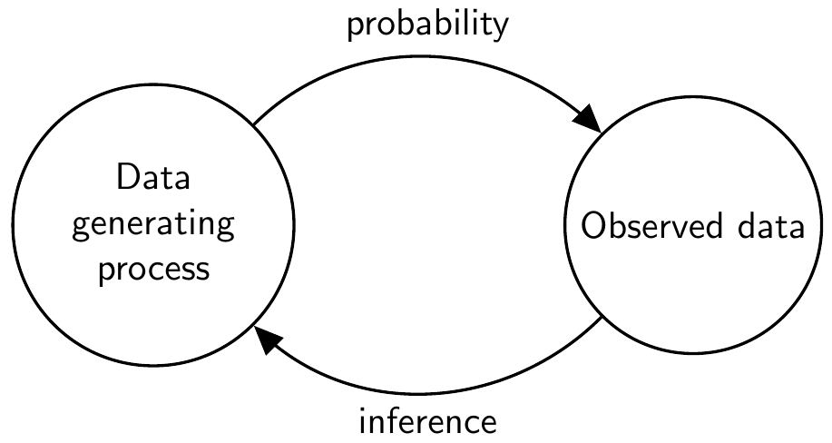
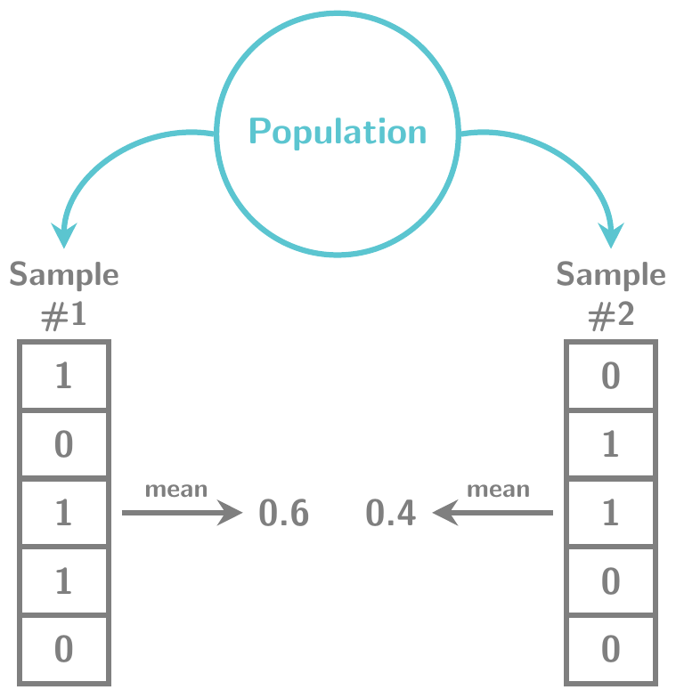
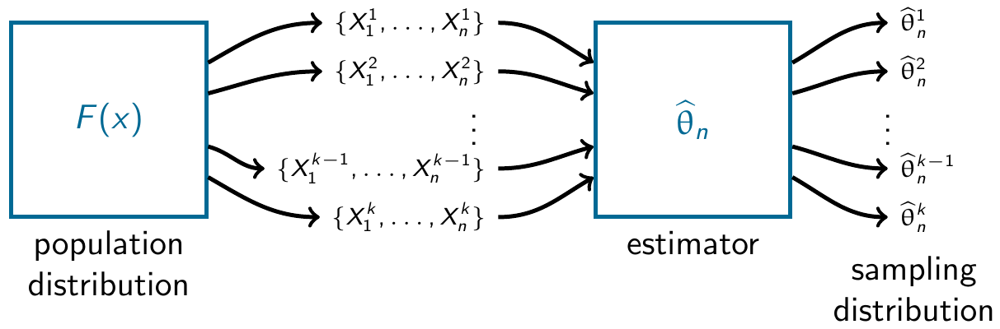
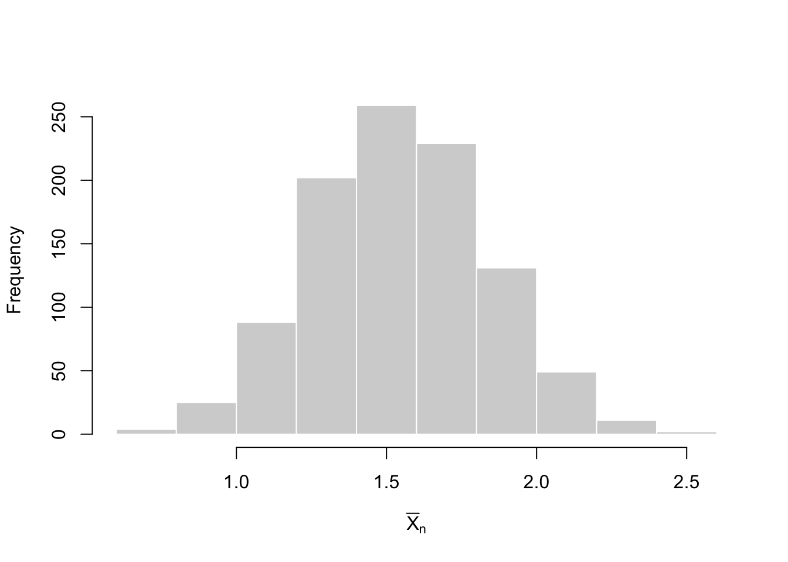
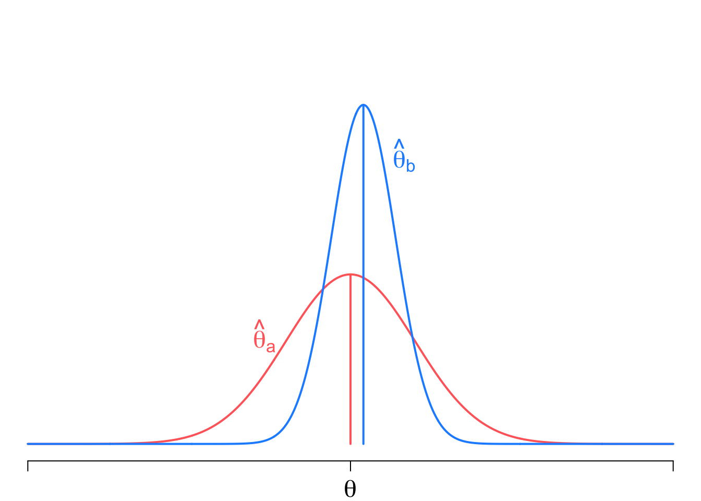
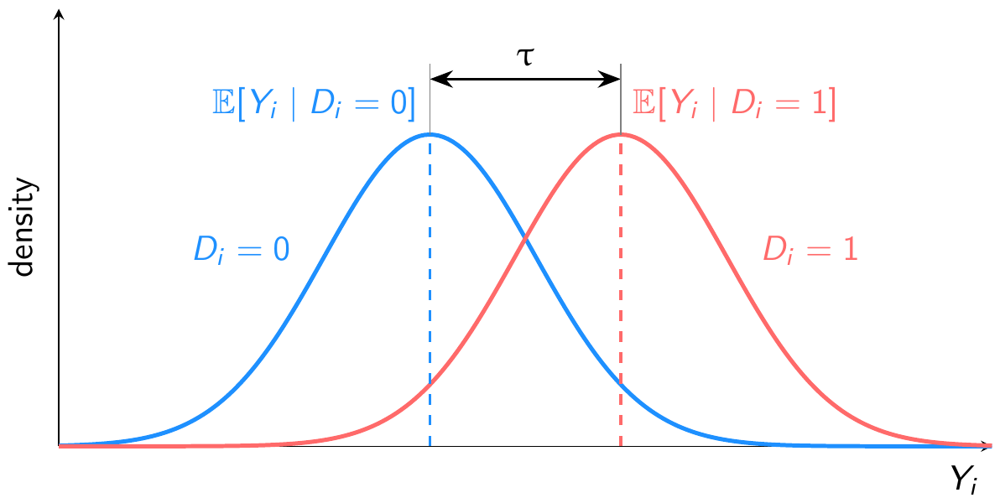

set.seed(123)
my_samp <- rbinom(n = 10, size = 4, prob = 0.4)
my_samp [1] 1 2 1 3 3 0 2 3 2 1prop.table(table(factor(my_samp, levels = 0:4)))
0 1 2 3 4
0.1 0.3 0.3 0.3 0.0 Suppose you have been tasked with estimating the fraction of a population that supports increasing legal immigration limits. You have a sample of data on some individual respondents’ support for the policy, but you don’t know exactly how this data was sampled. How should you use the information you know (the data) to make a best guess about the information you don’t know (the fraction of the population)?
The design-based approach that we discussed in Chapter 1 is a coherent and internally consistent framework for estimating quantities and quantifying uncertainty, but this crisp conceptual clarity comes from having exact knowledge of the sampling design. Going back to our immigration example, a reasonable approach is to use the fraction of the sample that supports the policy as the best guess about the fraction of the population. As we saw in the last chapter, a simple random sample would justify this approach.
But how does one perform estimation and inference when lacking complete information about the sampling design? How do we proceed with inference if outcomes are random due to nonresponse or measurement error? What if we would like to make inferences about a population not covered in the sampling frame? In these cases, inference requires additional information that can be incorporated via a statistical model. A model-based approach to statistical inference views the data \(X_1,\ldots, X_n\) as a set of random variables that follow some probability distribution. The measurements in the actual sample, \(x_1, \ldots, x_n\), are realizations of these random variables. The probability distribution of \(X_1,\ldots, X_n\) is the model for the data and all inferences are based on it. Models can be very specific – for example, a researcher might assume the data are normally distributed – or can be very general – for example, the distribution of the data has finite mean and variance.
The focus of this chapter (and most of introductory statistics) will be on statistical models that assume units are independent and identically distributed or, more succinctly, iid. This assumption means that each unit gives us new information about the same underlying data-generating process. Because this assumption is often motivated by a probability sample from a population, some authors also refer to this as a random sampling assumption. The “sample” refers to the idea that our data is a subset of some larger population. The “random” modifier means that the subset was chosen by an uncertain process that did not favor one type of person versus another.
Why focus on iid/random samples even though many data sets are at least partially non-random or represent the entire population rather than a subset? Consider the famous story of a drunkard’s search for a two-dollar bill lost in downtown Boston:1
“I lost a $2 bill down on Atlantic Avenue,” said the man.
“What’s that?” asked the puzzled officer. “You lost a $2 bill on Atlantic Avenue? Then why are you hunting around here in Copley Square?”
“Because,” said the man as he turned away and continued his hunt on his hands and knees, “the light’s better up here.”
Like the poor drunkard, we focus on searching an area (random sampling) that is easier to search because there is more light or, more accurately, easier math. Unlike this apocryphal tale, our search will help us better understand the darkness of non-random samples because the core ideas and intuitions from random sampling form the basis for the theoretical extensions into more exotic settings.
This chapter has two goals. First, we will introduce the entire model-based framework of estimation and estimators. We will discuss different ways to compare the properties of estimators. Most of these properties will be similar to those of the design-based framework, except the properties will be with respect to the model rather than the sampling design. (The core questions of quantitative research largely remain the same, but we replace specifying the sampling design with the specification of a probabilistic model for our data.) Second, we will establish key properties for a general class of estimators that can be written as a sample mean. These results are useful in their own right since these estimators are ubiquitous, but the derivations also provide examples of how we establish such results. Building comfort with these proofs helps us understand the arguments about novel estimators that we inevitably see over the course of our careers. While this chapter will not get to more complicated questions like nonresponse, measurement error, or dependent data, the model-based approach we present here is the foundation upon which all these extensions can be built.
Probability is the mathematical study of uncertain events and is the basis of the mathematical study of estimation. In probability, we assume we know the truth of the world (how many blue and red balls are in the urn) and calculate the probability of possible events (getting more than five red balls when drawing ten from the urn). Estimation works in reverse. Someone hands you five balls, 2 red and 3 blue, and your task is to guess the contents of the urn from which they came. With estimation, we use our observed data to make an inference about the data-generating process. Figure 2.1 shows the duality of these two processes.

An estimator is a rule for converting our data into a best guess about some unknown quantity, such as the percent of balls in the urn, or, to use our example from the introduction, the fraction of the public supporting increasing legal immigration limits. For example, an estimator could be a rule that the proportion of red balls that you draw from the urn is a good guess for the proportion of red balls that you would find if you looked inside the urn.
We prefer to use good estimators rather than bad estimators. But what makes an estimator good or bad? In our red ball example, an estimator that always returns the value 3 is probably bad. Still, it will be helpful for us to formally define and explore properties of estimators that will allow us to compare them and choose the good over the bad. We begin with an example that highlights two estimators that at first glance may seem similar.
Example 2.1 (Randomized control trial) Suppose we are conducting a randomized experiment on framing effects. All respondents receive factual information about current immigration levels. Those in the treatment group (\(D_i = 1\)) receive additional information about the positive benefits of immigration, while those in the control group (\(D_i = 0\)) receive no additional framing. We then ask respondents to provide a number of how much the legal immigration limits should be changed in the upcoming year (\(Y_i\)). The observed data consists of \(n\) pairs of random variables, the outcome, and the treatment assignment: \(\{(Y_1, D_1), \ldots, (Y_n, D_n)\}\).
Define the two sample means in each group as \[ \Ybar_1 = \frac{1}{n_1} \sum_{i: D_i = 1} Y_i, \qquad\qquad \Ybar_0 = \frac{1}{n_0} \sum_{i: D_i = 0} Y_i, \] where \(n_1 = \sum_{i=1}^n D_i\) is the number of treated units and \(n_0 = n - n_1\) is the number of control units.
A standard estimator for the treatment effect in a study such as this would be the difference in means, \(\Ybar_1 - \Ybar_0\). But this is only one of many possible estimators. We could also estimate the effect by taking this difference in means separately by party identification and then averaging those party-specific effects by the size of those groups. This estimator is commonly called a poststratification estimator. How should we choose between these two estimators? This chapter develops the tools we need to answer this question.
We now turn to the same key questions that we used to motivate design-based inference, but adapt these to consider model-based inference.
The main advantage and disadvantage of relying on models is that they are abstract and theoretical, which means the connection between a model and the population it helps explain is less direct than with the design-based framework. Nevertheless, we need to clearly articulate our population of study – that is, who or what we want to learn about – since it is crucial for evaluating the types of modeling assumptions that will be sustainable.
As in the design-based setting, there is often a clear and distinct population such as “all registered voters” or “all Boston residents.” In other cases, the population may be more abstract. For example, a large multi-field literature has studied how the size of minority populations affects the views of the local majority population. Researchers in this space may be interested in making claims beyond the particular geographic region or minority/majority group, instead implicitly or explicitly considering a “superpopulation” of such cases that their model might explain. While there is nothing theoretically wrong with this approach, these ideas are often neglected in practice and the “scope conditions” of a particular model go unarticulated. The best quantitative work will be clear about what units or processes it is trying to learn about so that readers can evaluate how well the modeling assumptions fit that task.
Let’s begin by building a bare-bones probability model for how our data came to be. As an example, suppose we have a data set with a series of numbers representing the ages, political party affiliations, and policy opinions of 1000 survey respondents. But we know that row 58 of our data could have produced a different set of numbers if another respondent had been selected as row 58 or if the original respondent gave a different opinion about immigration because they happened to see an immigration news story just before responding. To reason about this type of uncertainty precisely, we write \(X_i\) as the random variable representing the value that row \(i\) of some variable will take, before we see the data. The distribution of this random variable would tell us what types of data we should expect to see.
Why represent the data with random variables when we already know the value of the data itself? Why pretend we haven’t seen the data? The study of estimation from a frequentist perspective (which is the perspective of this book) focuses on the properties of estimators across repeated samples. In the example of the policy survey, this is akin to drawing a 1000 person sample repeatedly, each time including possibly different respondents in the sample. The random variable \(X_i\) represents our uncertainty about what value, say, age will take for respondent \(i\) in any of these samples, and the set \(\{X_{1}, \ldots, X_{n}\}\) represents our uncertainty about the entire column of ages for all \(n\) respondents. At the most general, the model-based approach says that these \(n\) random variables follow some joint distribution, \(F_{X_{1},\ldots,X_{n}}\), \[ \{X_{1}, \ldots, X_{n}\} \sim F_{X_{1},\ldots,X_{n}} \] The joint distribution \(F\) here represents the probability model for the data. We have made no assumptions about it so far, so it could be any joint probability distribution over \(n\) random variables. Note that this level of generality is difficult to work with in practice because there is essentially one draw from this joint distribution (the \(n\) measurements in the data). The core question of modeling is about what restrictions a researcher puts on this joint distribution to make learning about it more tractable.
We focus on a relatively simple setting where we assume the data \(\{X_1, \ldots, X_n\}\) are independent and identically distributed (iid) draws from a distribution with a common marginal cumulative distribution function (cdf) \(F\). They are independent in that information about any disjoint subset of random variable is not informative about any other subset of random variables. They are “identically distributed” in the sense that each of the random variables \(X_i\) have the same marginal distribution, \(F\). More formally, both of these imply \[ F_{X_{1},\ldots,X_{n}}(x_{1}, \ldots, x_{n}) = F_{X_{1}}(x_{1})\cdots F_{X_{n}}(x_{n}) = \prod_{i=1}^n F(x_i) \] where \(F_{X_{1},\ldots,X_{n}}(x_{1}, \ldots, x_{n})\) is the joint cdf of the random variable and \(F_{X_{j}}(x_{j})\) is the marginal cdf of the \(j\)th random variable. Throughout, we assume that \(F\) has a finite mean and variance.
Note that we are being purposely vague about this cdf—it simply represents the unknown distribution of the data, otherwise known as the data generating process (DGP). Sometimes \(F\) is also referred to as the population distribution or even just population, which has its roots in viewing the data as a random sample from some larger population. As a shorthand, we often say that the collection of random variables \(\{X_1, \ldots, X_n\}\) is a random sample from population \(F\) if \(\{X_1, \ldots, X_n\}\) is iid with distribution \(F\). The sample size \(n\) is the number of units in the sample.
You might wonder why we reference the distribution of \(X_i\) with the cdf, \(F\). Mathematical statistics tends to do this to avoid having to deal with discrete and continuous random variables separately. Every random variable – whether discrete or continuous – has a cdf, and the cdf contains all information about the distribution of a random variable.
Two metaphors help build intuition behind viewing the data as an iid draw from \(F\):
Note that Chapter 1 explored simple random samples without replacement, which is a more common type of sampling—since generally people are selected into a survey once and they do not go back into the pool of potential survey takers. Sampling without replacement creates dependence across units, which would violate the iid assumption. However, if the population size \(N\) is very large relative to the sample size \(n\), this dependence will be very small, and the iid assumption will be relatively innocuous.
Note that there are other situations where the iid assumption is not appropriate, and much of the innovation and growth in statistics over the last 50 years has been in figuring out how to make statistical inferences when iid does not hold. The solutions are often specific to the type of iid violation (e.g., spatial, time-series, network, clustered). However, if the iid assumption may not be valid, any uncertainty statements will likely be incorrect. For example, confidence intervals, which we will cover in Chapter 5, could be too small or too large.
Finally, we introduced the data as a scalar random variable, but often our data has multiple variables. In that case, we easily modify \(X_i\) to be a random vector (that is, a vector of random variables) and then \(F\) becomes the joint distribution of that random vector. Nothing substantive changes about the above discussion.
Survey sampling is one of the most popular ways of obtaining samples from a population, but modern sampling practices rarely produce a “clean” set of \(n\) iid responses. There are several reasons for this:
Modern random sampling techniques generally do not select every unit with the same probability. We might oversample certain groups for which we want more precise estimates, leading those groups to have a higher likelihood of being in the sample.
Response rates to surveys have been in steep decline and can often dip below 10%. Such non-random selection into the observed sample might lead to problems.
Internet polling is less costly than other forms of polling, but obtaining a list of population email addresses (or other digital contact information) to randomly sample is basically impossible. Large survey firms instead recruit large groups of panelists with known demographic information from which they can randomly sample in a way that matches population demographic information. Because the initial opt-in panel is not randomly sampled from the population, this procedure does not produce a true “random sample,” but, under certain assumptions, we can treat it like it is.
As discussed in Chapter 1, there are ways to handle all of these issues (mostly through the use of survey weights), but it is important to realize that using a modern survey “as if” it was a simple random sample might lead to poor performance and incorrect inferences.
In model-based inference, our goal is to learn about the data-generating process. Each data point \(X_i\) represents a draw from a distribution, captured by the cdf \(F\), and we would like to know more about this distribution. We might be interested in estimating the cdf at a general level or only some feature of the distribution, like a mean or conditional expectation function. We call these numerical features the quantities of interest. (Similarly, in the design-based inference framework we discussed in Chapter 1, the quantity of interest was a numerical summary of the finite population.)
The following are examples of frequently used quantities of interest:
Example 2.2 (Population mean) We may be interested in where the typical member of a population falls on some questions. Suppose we wanted to know the proportion of US citizens who support increasing legal immigration. For citizen \(i\), denote support as \(Y_i = 1\). Our quantity of interest is then the mean of this random variable, \(\mu = \E[Y_i] = \P(Y_{i} = 1)\). This is the same as the probability of randomly drawing someone from the population who supports increasing legal immigration.
Example 2.3 (Population variance) We may also be interested in variation in the population. For example, feeling thermometer scores are a common way to assess how survey respondents feel about a particular person or group. These ask each respondent to say how warmly he or she feels toward a group on a scale from 0 (cool) to 100 (warm), which we will denote \(Y_i\). We might be interested in how polarized views are toward a group in the population, and one measure of polarization could be the variance, or spread, of the distribution of \(Y_i\) around the mean. In this case, \(\sigma^2 = \V[Y_i] = \E[(Y_i - \E[Y_i])^2]\) would be our quantity of interest.
Example 2.4 (RCT continued) Example 2.1 discussed a typical estimator for an experimental study with a binary treatment. The goal of that experiment is to learn about the difference between two conditional expectations: 1) the average preferred change in legal immigration in the treatment group, \(\mu_1 = \E[Y_i \mid D_i = 1]\), and 2) the same average in the control group, \(\mu_0 = \E[Y_i \mid D_i = 0]\). This difference, \(\mu_1 - \mu_0\), is a function of unknown features of these two conditional distributions. When treatment is randomized, we can also say that this difference is the average treatment effect.
Each of these is a function of the (possibly joint) distribution of the data, \(F\). In each of these, we are not necessarily interested in the entire distribution, just summaries of it (central tendency, spread). Of course, there are situations where we are also interested in the complete distribution. To speak about estimation in general, we will let \(\theta\) represent some generic quantity of interest. Point estimation describes how we obtain a single “best guess” about \(\theta\).
Some refer to quantities of interest as parameters or estimands (that is, the target of estimation).
Having a target in mind, we can estimate it with our data. To do so, we first need a rule or algorithm or function that takes as inputs the data and returns a best guess about the quantity of interest. One of the most popular and useful algorithms would be to sum all the data points and divide by the number of points: \[ \frac{X_1 + X_2 + \cdots + X_n}{n}. \] This, the much-celebrated sample mean, provides a rule for how to produce a single-number summary of the data. To go one pedantic step further and define it as a function of the data more explicitly: \[ \textsf{mean}(X_1, X_2, \ldots, X_n) = \frac{X_1 + X_2 + \cdots + X_n}{n}. \] We can generalize this idea to provide a definition for an arbitrary estimator for an arbitrary quantity of interest.
Definition 2.1 An estimator \(\widehat{\theta}_n = g(X_1, \ldots, X_n)\) for some parameter \(\theta\), is a function of the data intended as a guess about \(\theta\).
It is widespread, though not universal, to use the “hat” notation to define an estimator and its estimand. For example, \(\widehat{\theta}_n\) (or “theta hat”) indicates that this estimator is targeting the parameter \(\theta\) from a sample of size \(n\).
Example 2.5 (Estimators for the population mean) Suppose our goal is to estimate the population mean of \(F\), which we will represent as \(\mu = \E[X_i]\). We could choose from several estimators, all with different properties. \[ \widehat{\theta}_{n,1} = \frac{1}{n} \sum_{i=1}^n X_i, \quad \widehat{\theta}_{n,2} = X_1, \quad \widehat{\theta}_{n,3} = \text{max}(X_1,\ldots,X_n), \quad \widehat{\theta}_{n,4} = 3 \] The first is just the sample mean, which is an intuitive and natural estimator for the population mean. The second just uses the first observation. While this seems silly, this is a valid estimator since it is a function of the data! The third takes the maximum value in the sample, and the fourth always returns three, regardless of the data. These are also valid estimators.
When we view the data \(\{X_{1}, \ldots, X_{n}\}\) as a collection of random variables, then any function of them is also a random variable. Thus, we can view \(\widehat{\theta}_n\) as a random variable that has a distribution induced by the randomness of the sample. Drawing two different samples of respondents will lead to two different estimates. For example, Figure 2.2 illustrates two samples of size \(n = 5\) from the population distribution of a binary variable.

We can see that the mean of the variable depends on what exact values end up in our sample. We refer to the distribution of \(\widehat{\theta}_n\) across repeated samples as its sampling distribution. The sampling distribution of an estimator will be the basis for all of the formal statistical properties of an estimator.
One important distinction of jargon is between an estimator and an estimate. The estimator is a function of the data, whereas the estimate is the realized value of the estimator once we see the data (that is, the data are realized). The estimator is a random variable that has uncertainty over what value it will take. An estimate is a single number, such as 0.38, that we calculated in R with our data (our draw from \(F\)). Formally, the estimate is \(g(x_1, \ldots, x_n)\) when the data is \(\{X_1, \ldots, X_n\} = \{x_1, \ldots, x_n\}\), whereas we represent the estimator as a function of random variables, \(\widehat{\theta}_n = g(X_1, \ldots, X_n)\).
Where do estimators come from? That may seem like a question reserved for statisticians or methodologists or others responsible for “developing new methods.” But knowing how estimators are derived is valuable even if we never plan to do it ourselves. Knowing where an estimator comes from provides strong insights into its strengths and weaknesses. We will briefly introduce estimators based on parametric models, before turning to the main focus of this book, plug-in estimators.
The first method for generating estimators relies on parametric models, in which the researcher specifies the exact distribution (up to some unknown parameters) of the DGP. Let \(\theta\) be the parameters of this distribution, where \(\{X_1, \ldots, X_n\}\) are iid draws from \(F_{\theta}\). We should also formally state the set of possible values the parameters can take, which we call the parameter space, denoted by \(\Theta\). Because we assume we know the distribution of the data, we can write the probability density function, or pdf, as \(f(X_i \mid \theta)\) and define the likelihood function as the product of these pdfs over the units as a function of the parameters: \[ L_n(\theta) = \prod_{i=1}^n f(X_i \mid \theta). \] We can then define the maximum likelihood estimator (MLE) for \(\theta\) as the values of the parameter that, well, maximize the likelihood: \[ \widehat{\theta}_{\text{mle}} = \argmax_{\theta \in \Theta} \; L_n(\theta), \] where we make some regularity assumption to ensure the maximum exists and is unique. Sometimes we can use calculus to derive a closed-form expression for the MLE. At other times we use iterative techniques that search the parameter space for the maximum.
Maximum likelihood estimators have nice properties, especially in large samples. Unfortunately, they also require the correct knowledge of the parametric model, which is often difficult to justify. Do we really know if we should model a given event count variable as Poisson or Negative Binomial? The attractive properties of MLE are only as good as the ability to specify the parametric model.
In many cases, we do not have confidence in our ability to specify all aspects of the data generating process correctly. A semiparametric model specifies a finite-dimensional set of parameters for the generating process but leaves the rest of the distribution unspecified. For example, we might define a population mean, \(\mu = \E[X_i]\) and a population variance, \(\sigma^2 = \V[X_i]\) but leave the shape of the distribution unrestricted. The advantage of this modeling approach is that our estimators will be less dependent on correctly specifying distributions about which we have little intuition or knowledge.
The primary method for constructing estimators in this setting is to use a plug-in estimator, which replaces any function of the population distribution with an equivalent function of the empirical or sample distribution. In econometrics, this is also called the analog principle or analog estimation after Manski (1988). For example, we replace any population mean with the equivalent sample mean or population medians with sample medians, and so on. This approach fits nicely with an estimand-driven workflow because the formula for the quantity of interest naturally suggests plug-in estimators.
Plug-in estimation is very intuitive—replace population means with sample means—but it’s helpful to understand its core formal components. If we have data \((X_1, \ldots, X_n)\) that are distributed iid with distribution \(F\), then we can define the empirical distribution as \[ \widehat{F}_n(x) = \frac{\sum_{i=1}^n \mathbb{I}(X_i \leq x)}{n}, \] where \(\mathbb{I}(A)\) is an indicator function that takes the value 1 if the event \(A\) occurs and 0 otherwise. In plain language, we are replacing the unknown population distribution \(F\) with a discrete uniform distribution over our data points, with \(1/n\) probability assigned to each unit. Why do this? It encodes that, if we have a random sample, our best guess about the population distribution of \(X_i\) is the sample distribution in our observed data.
A simple example of a plug-in estimator is the sample mean. Suppose \(X_i\) has a discrete distribution over integers so we can write its mean as \[ \E[X_i] = \sum_{x} x\,\P(X_i = x) = \sum_{x} x\, (F(x) - F(x-1)). \] The plug-in approach would have us replace \(F\) with \(\widehat{F}_n\) in this setup: \[ \begin{aligned} \sum_{x} x\, (\widehat{F}_n(x) - \widehat{F}_n(x-1)) &= \sum_{x} x\, \sum_{i=1}^n \frac{\mathbb{I}(X_i = x)}{n} \\ &= \sum_{i=1}^n \sum_{x} x\,\frac{\mathbb{I}(X_i = x)}{n} \\ & = \frac{1}{n} \sum_{i=1}^n X_i = \Xbar_n \end{aligned} \] where we used the fact that \(\sum_{x} x\,\mathbb{I}(X_i = x) = X_i\) here. Thus, the sample mean is a plug-in estimator for the population mean. Note that this result does not actually depend on having a discrete random variable. For more detail on the statistical theory of plug-in estimation, see Wasserman (2004) Section 7.2.
Given the connection between the population mean and the sample mean, you may see the \(\E_n[\cdot]\) operator used as a shorthand for the sample average: \[ \E_n[r(X_i)] \equiv \frac{1}{n} \sum_{i=1}^n r(X_i). \]
More generally, any quantity of interest about the population can be written as mapping from the space of all distributions to a real number (or vector of real numbers), \(\psi(F)\). We call such a mapping a statistical functional (functionals are like functions that take other functions as inputs). Formally, a plug-in estimator of \(\theta = \psi(F)\) is defined as \(\widehat{\theta}_n = \psi(\widehat{F}_n)\). If we can write the functional in terms of population means, then one shortcut to derive these estimators is to replace any population means, \(\E[\cdot]\) with sample means \(\E_n[\cdot]\).
Example 2.6 (Estimating population variance) The population variance of a random variable is \(\sigma^2 = \E[(X_i - \E[X_i])^2]=\E[X_i^2] - (\E[X_i])^2\), which we can write as the functional \[ \sigma^2 = \psi(F) = \E[X_i^2] - (\E[X_i])^2 \]
To derive a plug-in estimator for this quantity, we simply replace the population means with sample means and rearrange: \[ \begin{aligned} \widehat{\sigma}^2 = \psi(\widehat{F}_n) &= \E_n[X_i^2] - (\E_n[X_i])^2 \\ &=\frac{1}{n} \sum_{i=1}^n X_i^2 - \left(\frac{1}{n} \sum_{i=1}^n X_i\right)^2 \\ &=\frac{1}{n} \sum_{i=1}^n (X_i - \Xbar_n)^2. \end{aligned} \] This plug-in estimator differs from the standard sample variance, which divides by \(n - 1\) rather than \(n\). This difference shrinks as the sample size grows.
Example 2.7 (Estimating population covariance) Suppose we have two variables, \((X_i, Y_i)\). A natural quantity of interest here is the population covariance between these variables, \[ \sigma_{xy} = \cov[X_i,Y_i] = \E[(X_i - \E[X_i])(Y_i-\E[Y_i])], \] which has the plug-in estimator, \[ \widehat{\sigma}_{xy} = \frac{1}{n} \sum_{i=1}^n (X_i - \Xbar_n)(Y_i - \Ybar_n). \]
There is a special class of statistical functionals called linear functionals of the form \(\theta = \E[r(X_i)]\). The key is to see that \(r(X_i)\) is also a random variable. Let this random variable be \(Y_i = r(X_i)\). Now we can see that \(\theta\) is just the population expectation of this random variable. Using the plug-in estimator gives us: \[ \widehat{\theta}_n = \frac{1}{n} \sum_{i=1}^n Y_i = \frac{1}{n} \sum_{i=1}^n r(X_i). \] We refer to these as linear plug-in estimators.
Plug-in estimation goes beyond just replacing population means with sample means. We can derive estimators of the population quantiles like the median with sample versions of those quantities.
Example 2.8 (Estimating the population median) The population median, \(m = F^{-1}(0.5) = \inf\left\{x : F(x) \geq 0.5 \right\}\) can be replaced by the empirical version, \(\widehat{m} = \widehat{F}_n^{-1}(0.5) = \inf \left\{x : \widehat{F}_n(x) \geq 0.5 \right\}\), which is simply the smallest value the variable can take such that 50% of the empirical distribution is at or below it.
Finally, plug-in estimation can work even when we do not have a closed-form solution for the quantity of interest. Many quantities are solutions to minimization problems which are easy to state. For example, the population mean minimizes the mean squared prediction error, \[ \E[X_i] = \argmin_{b} \E\left[(X_i - b)^2\right]. \] We can form plug-in estimators by replacing these population optimization problems with their sample counterparts. MLE is of this form, and so is ordinary least squares, as we will see in Chapter 7.
Once we start to wade into estimation, there are several distributions to keep track of, and things can quickly become confusing. Three specific distributions are all related and easy to confuse, but keeping them distinct is crucial.
The population distribution is the distribution of the random variable, \(X_i\), which we have labeled \(F\) and is our target of inference. The empirical distribution is the distribution of the actual realizations of the random variables in our samples, \(X_1, \ldots, X_n\) (that is, the values that we eventually observe in our data frame). Because this is a random sample from the population distribution and can serve as an estimator of \(F\), we sometimes call this \(\widehat{F}_n\).

Separately from both is the sampling distribution of an estimator, which is the probability distribution of \(\widehat{\theta}_n\). This represents the uncertainty around our estimate before we see the data. Figure 2.3 shows how these three distributions relate. Remember that our estimator is itself a random variable because it is a function of random variables: the data itself. That is, we defined the estimator as \(\widehat{\theta}_n = g(X_1, \ldots, X_n)\).
Example 2.9 (Likert responses) Suppose \(X_i\) is the answer to the question “How much do you agree with the following statement: Immigrants are a net positive for the United States,” where \(X_i = 0\) is “strongly disagree,” \(X_i = 1\) is “disagree,” \(X_i = 2\) is “neither agree nor disagree,” \(X_i = 3\) is “agree,” and \(X_i = 4\) is “strongly agree.”
The population distribution describes the probability of randomly selecting a person with each one of these values, \(\P(X_i = x)\). The empirical distribution would be the fraction of our observed data taking each value. And the sampling distribution of the sample mean, \(\Xbar_n\), would be the distribution of the sample mean recalculated across repeated samples from the population.
Suppose the population distribution of \(X_i\) followed a binomial distribution with four trials and probability of success in each trial of \(p = 0.4\). We could generate one sample with \(n = 10\) and thus one empirical distribution using rbinom():
set.seed(123)
my_samp <- rbinom(n = 10, size = 4, prob = 0.4)
my_samp [1] 1 2 1 3 3 0 2 3 2 1prop.table(table(factor(my_samp, levels = 0:4)))
0 1 2 3 4
0.1 0.3 0.3 0.3 0.0 We obtain one draw from the sampling distribution of \(\Xbar_n\) by taking the mean of this sample:
mean(my_samp)[1] 1.8If we had a different sample, however, we would obtain a different empirical distribution and thus get a different estimate of the sample mean:
my_samp2 <- rbinom(n = 10, size = 4, prob = 0.4)
mean(my_samp2)[1] 1.6The sampling distribution is the distribution of these sample means across repeated sampling. Figure 2.4
reps <- 1000
sampling_dist <- rep(NA, times = reps)
for (r in seq_len(reps)) {
sampling_dist[r] <- mean(rbinom(n = 10, size = 4, prob = 0.4))
}
hist(
sampling_dist,
main = "",
xlab = expression(bar(X)[n]),
border = "white"
)
As discussed in our introduction to estimators, their usefulness depends on how well they help us learn about the quantity of interest. If we get an estimate of \(1.6\), we would like to know that this is “close” to the true parameter \(\theta\). The sampling distribution is key to answering these questions. Intuitively, we would like the sampling distribution of \(\widehat{\theta}_n\) to be as tightly clustered around the true \(\theta\) as possible. Here, though, we run into a problem: the sampling distribution depends on the population distribution since it is about repeated samples of the data from that distribution filtered through the function \(g()\). Since \(F\) is unknown, this implies that the sampling distribution will also usually be unknown.
Even though we cannot precisely pin down the entire sampling distribution, we can use assumptions to derive specific properties of the sampling distribution that are useful in comparing estimators. Note that the properties here will be very similar to the properties of a good estimator defined in Section 1.5.1.
The first property of the sampling distribution concerns its central tendency. In particular, we define the bias (or estimation bias) of estimator \(\widehat{\theta}_n\) for parameter \(\theta\) as \[ \textsf{bias}[\widehat{\theta}_n] = \E[\widehat{\theta}_n] - \theta, \] which is the difference between the mean of the estimator (across repeated samples) and the true parameter. All else equal, we would like the estimation bias to be as small as possible. The smallest possible bias, obviously, is 0, and we define an unbiased estimator as one with \(\textsf{bias}[\widehat{\theta}_n] = 0\) or equivalently, \(\E[\widehat{\theta}_n] = \theta\).
However, all else is not always equal, and unbiasedness is not a property to which we should become overly attached. Many biased estimators have other attractive properties, and many popular modern estimators are biased.
Example 2.10 (Unbiasedness of the sample mean) The sample mean is unbiased for the population mean when the data is iid and \(\E|X_i| < \infty\). In particular, we apply the rules of expectations: \[\begin{aligned} \E\left[ \Xbar_n \right] &= \E\left[\frac{1}{n} \sum_{i=1}^n X_i\right] & (\text{definition of } \Xbar_n) \\ &= \frac{1}{n} \sum_{i=1}^n \E[X_i] & (\text{linearity of } \E)\\ &= \frac{1}{n} \sum_{i=1}^n \mu & (\E[X_i] = \mu \text{ for all }i)\\ &= \mu. \end{aligned}\] Notice that we never invoke independence here and only used part of the “identically distributed” assumption—namely a common finite mean \(\E[X_i] = \mu\).
Properties like unbiasedness might only hold for a subset of DGPs. For example, we just showed that the sample mean is unbiased but only when the population mean is defined. There are probability distributions, like the Cauchy, for which the expected value is undefined. Thus, here we are dealing with a restricted class of DGPs that rules out such distributions. This is sometimes formalized by defining a class \(\mathcal{F}\) of distributions as in the last example (all \(F\) such that \(\E|X_i| < \infty\)). We say an estimator is unbiased over \(\mathcal F\) if \(\E_F[\widehat\theta_n]=\theta(F)\) for every \(F\in\mathcal F\).
Example 2.11 (Linear plug-in estimators are unbiased) For iid data, \(X_i\), we can show that any linear plug-in estimators are unbiased. Recall that linear plug-in estimators are of the form \(\frac{1}{n} \sum_{i=1}^n r(X_i)\) and we assume \(\E[|r(X_i)|] < \infty\). Thus, similar to the proof of the unbiasedness of the sample mean, we have
\[ \E\left[\frac{1}{n} \sum_{i=1}^n r(X_i)\right] = \frac{1}{n} \sum_{i=1}^n \E\left[r(X_i)\right] = \E\left[r(X_i)\right]. \]
On the other hand, nonlinear plug-in estimators are typically (though not always) biased, which we can see in the example of the plug-in estimator for the population variance.
Example 2.12 (Bias of the population variance plug-in estimator) In Example 2.6, we introduced the plug-in estimator for the population variance, \[ \widehat{\sigma}^2 = \frac{1}{n} \sum_{i=1}^n (X_i - \Xbar_n)^2, \] which we will now show is biased. To see the bias note that we can rewrite the sum of square deviations \[ \sum_{i=1}^n (X_i - \Xbar_n)^2 = \sum_{i=1}^n X_i^2 - n\Xbar_n^2. \] Then, the expectation of the plug-in estimator is \[ \begin{aligned} \E[\widehat{\sigma}^2] & = \E\left[\frac{1}{n}\sum_{i=1}^n X_i^2\right] - \E[\Xbar_n^2] \\ &= \E[X_i^2] - \frac{1}{n^2}\sum_{i=1}^n \sum_{j=1}^n \E[X_iX_j] \\ &= \E[X_i^2] - \frac{1}{n^2}\sum_{i=1}^n \E[X_i^2] - \frac{1}{n^2}\sum_{i=1}^n \sum_{j\neq i} \underbrace{\E[X_i]\E[X_j]}_{\text{independence}} \\ &= \E[X_i^2] - \frac{1}{n}\E[X_i^2] - \frac{1}{n^2} n(n-1)\mu^2 \\ &= \frac{n-1}{n} \left(\E[X_i^2] - \mu^2\right) \\ &= \frac{n-1}{n} \sigma^2 = \sigma^2 - \frac{1}{n}\sigma^2. \end{aligned} \] Thus, we can see that the bias of the plug-in estimator is \(-(1/n)\sigma^2\), so it underestimates the variance (though this bias declines as the sample size grows).
The standard sample variance, on the other hand, divides by \(n-1\) instead of \(n\),
\[ S_n^2 = \frac{1}{n-1}\sum_{i=1}^n (X_i - \Xbar_n)^2, \] which we can see is related to the plug-in estimator as \[ S_n^2 = \frac{n}{n-1}\widehat{\sigma}^2. \] Combining this with our derivation above, this shows that the standard sample variance is exactly unbiased, \[ \E[S_n^2] = \frac{n}{n-1}\E\left[\widehat{\sigma}^2\right] = \frac{n}{n-1}\frac{n-1}{n} \sigma^2 = \sigma^2. \] This result is why the sample variance uses the \(n-1\) instead of \(n\) in the denominator (referred to as Bessel’s correction). It’s a form of bias correction!
Question 4 focused on how to construct estimators and checking whether they center on the parameter of interest. Question 5 focuses on how much the estimator will vary from sample to sample. We define the sampling variance as the variance of an estimator’s sampling distribution, \(\V[\widehat{\theta}_n]\), which measures how spread out the estimator is around its mean. For an unbiased estimator, lower sampling variance implies the distribution of \(\widehat{\theta}_n\) is closer (in squared distance) to the true value on average.
Example 2.13 (Sampling variance of the sample mean) We can prove that the sampling variance of the sample mean of iid data for all \(F\) such that \(\V[X_i]\) is finite (more precisely, \(\E[X_i^2] < \infty\)) is \(\V[\Xbar_n] = \sigma^2/n\).
\[\begin{aligned} \V\left[ \Xbar_n \right] &= \V\left[ \frac{1}{n} \sum_{i=1}^n X_i \right] & (\text{definition of } \Xbar_n) \\ &= \frac{1}{n^2} \V\left[ \sum_{i=1}^n X_i \right] & (\text{property of } \V) \\ &= \frac{1}{n^2} \sum_{i=1}^n \V[X_i] & (\text{independence}) \\ &= \frac{1}{n^2} \sum_{i=1}^n \sigma^2 & (X_i \text{ identically distributed}) \\ &= \frac{\sigma^2}{n} \end{aligned}\] Note that we invoked independence here, but we only need a weaker condition—pairwise zero correlation—in order to obtain the result.
Example 2.14 (Sampling variance of linear plug-in estimators) If \(\E[r(X_i)^2] < \infty\), we can generalize the sampling variance result to any linear plug-in estimator.
\[ \V\left[\frac{1}{n} \sum_{i=1}^n r(X_i)\right] = \frac{1}{n^2} \sum_{i=1}^n \V[r(X_i)] = \frac{\V[r(X_i)]}{n}. \]
One could easily estimate this quantity by replacing the population variance \(\V[r(X_i)]\) with the sample variance of \(r(X_i)\). Note that the derivation for non-linear plug-in estimators depends on large-sample approximations that we will see in Section 3.8.
As we discussed in Section 1.5.1, an alternative measure of spread for any distribution is the standard deviation, which is on the same scale as the original random variable. The standard deviation of the sampling distribution of \(\widehat{\theta}_n\) is known as the standard error of \(\widehat{\theta}_n\): \(\se[\widehat{\theta}_n]= \sqrt{\V[\widehat{\theta}_n]}\).
Given the above derivation, the standard error of the sample mean under iid sampling is \(\sigma / \sqrt{n}\). Notice that this quantity depends on the population distribution through \(\sigma\) and so is unknown. We can estimate the standard error by replacing this population standard deviation with the sample standard deviation,
\[ S_n = \sqrt{S_n^2} = \sqrt{\frac{\sum_{i=1}^n (X_i - \Xbar_n)^2}{n-1}} \] to obtain the estimated standard error, \[ \widehat{\se}[\Xbar_n] = \frac{S_n}{\sqrt{n}}. \] This estimator is actually biased because the sample standard deviation is biased for the population standard deviation (a decent exercise is to work through why). However, as we will see in Chapter 3, this estimator has properties that make it a good and useful estimator in larger samples.
Bias and sampling variance measure two properties of “good” estimators because they capture the fact that we want the estimator to be as close as possible to the true value. One summary measure of the quality of an estimator is the mean squared error or MSE, which is \[ \text{MSE}[\widehat{\theta}_n] = \E[(\widehat{\theta}_n-\theta)^2]. \] We would ideally have this be as small as possible! If we are comparing two estimators, \(\widehat{\theta}_a\) and \(\widehat{\theta}_b\) and one has a lower MSE, \[ \text{MSE}[\widehat{\theta}_b] < \text{MSE}[\widehat{\theta}_a], \] then we say that \(\widehat{\theta}_b\) is more efficient than \(\widehat{\theta}_a\).
The MSE also relates to the bias and the sampling variance (provided it is finite) via the following decomposition result (see Section 1.5.1 for a derivation): \[ \text{MSE}[\widehat{\theta}_n] = \textsf{bias}[\widehat{\theta}_n]^2 + \V[\widehat{\theta}_n] \tag{2.1}\]
Example 2.15 (Population mean estimators, revisited) In Example 2.5, we explored four estimators for the population mean, \(\mu\). We can now assess their properties to compare three of them (we omit the maximum estimator because its derivations are more complicated)
\[ \begin{aligned} \E[\widehat{\theta}_{n,1}] &= \E\left[\frac{1}{n} \sum_{i=1}^n X_i \right] = \mu, \\ \E[\widehat{\theta}_{n,2}] &= \E[X_1] = \mu, \\ \E[\widehat{\theta}_{n,4}] &= \E[3] = 3. \end{aligned} \]
Clearly the first two are unbiased, and the last has bias equal to \(3 - \mu\). Combining these with the variance derivations, the decomposition in Equation 2.1 implies: \[\begin{aligned} \text{MSE}[\widehat{\theta}_{n,1}] &= \V[\Xbar_n] = \frac{\sigma^2}{n}, \\ \text{MSE}[\widehat{\theta}_{n,2}] &= \V[X_1] = \sigma^2, \\ \text{MSE}[\widehat{\theta}_{n,4}] &= \textsf{bias}[\widehat{\theta}_{n,4}]^2 + \V[\widehat{\theta}_{n,4}] = (3- \mu)^2. \end{aligned} \]
We can see that, as long as \(n > 1\) (and \(\sigma^2 >0\)), the sample mean will have lower MSE than the first observation. Its comparison to the “always 3” estimator is slightly more interesting because it depends on the value of the mean. If \(|3 - \mu| < \sigma/\sqrt{n}\), then “always 3” will have a lower MSE, but the sample mean will otherwise have lower MSE.
This decomposition implies that, for unbiased estimators, MSE is the sampling variance. It also highlights why we might accept some bias for significant reductions in variance for lower overall MSE.

Figure 2.5 shows the sampling distributions of two estimators: (1) \(\widehat{\theta}_a\), which is unbiased (centered on the true value \(\theta\)) but with a high sampling variance, and (2) \(\widehat{\theta}_b\), which is slightly biased but with much lower sampling variance. Even though \(\widehat{\theta}_b\) is biased, its draw will, on average, be closer to the truth in squared distance than those of \(\widehat{\theta}_a\). The MSE helps capture this balancing between bias and variance, and, indeed, in this case, \(\text{MSE}[\widehat{\theta}_b] < \text{MSE}[\widehat{\theta}_a]\).
Building up intuition about the assumptions-precision tradeoff is essential. Researchers can usually get more precise estimates if they make stronger and potentially more fragile assumptions that, if incorrect, yield bias. Conversely, weaker assumptions typically will cost precision while guarding against bias due to incorrect assumptions. The decomposition of the MSE above gets at this exact tension.
In Example 2.1, we introduced the basic idea of a randomized control trial on framing effects. We can now analyze the difference-in-means estimator in the context of the five questions.
Population. The nature of the population will vary by setting but here we probably want to make generalizations to all citizens of the United States.
Statistical model. In survey experiments, we have a representative survey that should approximate a random sample from the population. We can model this approximation as each outcome-treatment pair, \((Y_i, D_i)\), being iid draws from the population distribution of those two variables. In this setting, we only care about the conditional distribution of \(Y_i\) given \(D_i = 1\) or \(D_i = 0\). We show what the population distributions might look like for these two groups in Figure 2.6.

Quantities of interest. Let \(\mu_d = \E[Y_i \mid D_i = d]\) be the conditional mean of the outcome in either the treated or control group. The quantity of interest for a randomized control trial is typically the average difference in the populations, or \[ \tau = \mu_1 - \mu_0. \] We can also write the conditional variance of the outcome for each group as \(\sigma^2_d = \V[Y_i \mid D_i = d]\).
Estimator. The estimator we introduced in Example 2.1 was the difference in sample means, \[\widehat{\tau} = \Ybar_1 - \Ybar_0.\]
To determine the main properties of this estimator, we will employ a slight trick: conditioning on the observed treatment assignment. Let \(\mathbf{D} = (D_1, \ldots, D_n)\) be the vector of observed treatment assignment for all units. Conditional on \(\mathbf{D}\), the treated and control groups outcomes are iid samples of fixed sizes \(n_1\) and \(n_0\) from the conditional distribution of \(Y_i\) given \(D_i = 1\) or \(D_i = 0\), respectively, so we can employ the key results about sample means above.
It only makes sense to derive the properties of the difference-in-means estimator conditional on \(\mathbf{D}\) when that treatment assignment will allow well-defined sample means and sample variances. Thus, thoughout these derivations, we implicitly condition on \(n_1, n_0 > 1\) (since the sample variance requires at least 2 units to be well-defined).
The treated average is conditionally unbiased: \[
\begin{aligned}
\E[\Ybar_1 \mid \mathbf{D}] &= \E\left[\frac{1}{n_1} \sum_{i=1}^n D_iY_i \mid \mathbf{D}\right] \\
&= \frac{1}{n_1} \sum_{i=1}^n D_i \E[Y_i \mid \mathbf{D}] \\
&= \frac{1}{n_1} \sum_{i=1}^n D_i \mu_1 \\
&= \frac{\sum_{i=1}^n D_i}{n_1} \mu_1 \\
&= \mu_1
\end{aligned}
\] The third equality leverages two subtle facts. First, independence of units means that \(Y_i\) is independent of other units’ treatments, so \(\E[Y_i \mid \mathbf{D}] = \E[Y_i \mid D_i]\). Second, recall conditional expectations are random variables so
\[
\E[Y_i \mid D_i] = D_i \mu_1 + (1 - D_i)\mu_0
\] Thus, \(D_i\E[Y_i \mid D_i]\) is going to be \(D_i \mu_1\).
From this derivation, we can see that sample conditional mean \(\Ybar_1\) is unbiased for the population condition mean, \(\mu_1\). By a similar argument, the control sample average is also unbiased for the control population average, which implies that the difference in sample means is also unbiased for the population difference in means, \(\E[\widehat{\tau} \mid \mathbf{D}] = \tau\). Given that this holds for any \(\mathbf{D}\) with non-empty groups, the law of iterated expectations implies \(\E[\widehat{\tau}] = \tau\) and the estimator is unconditionally unbiased as well.
Uncertainty. What about the sampling variance of the difference in means? Conditional on the observed assignment, the sample means have the same form as \(\V[\Xbar_n]\):
\[ \V[\Ybar_1 \mid \mathbf{D}] =\frac{1}{n_1^2}\sum_{i=1}^n D_i\,\V[Y_i \mid D_i = 1] = \frac{\sigma^2_1}{n_1}, \]
and likewise for \(\V[\Ybar_0 \mid \mathbf{D}] = \sigma^2_0/ n_0\).
Conditional on the observed treatment assignment, the treatment and control data are independent samples, meaning the (conditional) variance of the difference in means estimator is the sum of conditional variances: \[ \V[\widehat{\tau} \mid \mathbf{D}] = \frac{\sigma^2_1}{n_1} + \frac{\sigma^2_0}{n_0}. \]
To estimate this variance, we can replace each unknown \(\sigma^2_d\) with the sample variance within that group, \(S^2_d = \frac{1}{n_d - 1}\sum_{i:D_i = d}(Y_i - \Ybar_d)^2\) to obtain estimates of the sampling variance and standard error: \[ \begin{aligned} \widehat{\V}[\widehat{\tau}] &= \frac{S^2_1}{n_1} + \frac{S^2_0}{n_0} \\ \widehat{\se}[\widehat{\tau}] &= \sqrt{\frac{S^2_1}{n_1} + \frac{S^2_0}{n_0}} \end{aligned} \] Here, we have abused notation slightly by using subscripts for the treatment/control labels instead of sample size: \(S^2_1\) is the sample variance in the treatment group, not sample variance with \(n = 1\). Conditional on the observed treatment assignment, \(\mathbf{D}\), remember that the treated and control groups are just iid samples from a distribution and so we know that the sample variances are unbiased, \(\E[S^2_d \mid \mathbf{D}] = \sigma^2_d\), which implies that \(\widehat{\V}[\widehat{\tau}]\) is also unbiased for \(\V[\widehat{\tau} \mid \mathbf{D}]\), conditional on \(\mathbf{D}\). Note that \(\E[\widehat\tau\mid\mathbf D]=\tau\) does not depend on the treatment assignment, which implies that \(\widehat{\V}[\widehat{\tau}]\) is unbiased for the unconditional variance, \(\V[\widehat{\tau}]\), as well.
Much like the standard error estimator for the mean, \(\widehat{\se}[\widehat{\tau}]\) will be slightly biased downward. Chapter 3 will show us why these types of estimators will still work well in large samples.
In this chapter, we introduced model-based inference, which treats the data as random variables drawn from a probability model rather than from a known sampling design (as in Chapter 1). These models can be parametric in the sense that we specify the probability distribution of the data up to some parameters, or they can also be semiparametric where we only specify certain features of the distribution such as a finite mean and variance. This chapter mostly focused on the latter, where we assumed the observed data were independent and identically distributed draws from a population distribution with finite mean and variance.
An estimator is a function of the data meant as a guess for some quantity of interest in the population. Because it is a function of random variables (the data), estimators are also random variables and have distributions, called sampling distributions, across repeated draws from the population. If this distribution is centered on the true value of the quantity of interest, we call the estimator unbiased. The variance of the sampling distribution, called the sampling variance, tells us how variable we should expect the estimator to be across draws from the population. The mean-squared error is an overall measure of the accuracy of an estimator that combines notions of bias and sampling variance.
We showed in this chapter that the sample mean is unbiased for the population mean and that the sampling variance of the sample mean is the ratio of the population variance to the sample size. We also saw that plug-in estimators replace the unknown population distribution with the empirical disrtibution of the data and are a powerful way of constructing estimators. We derived the bias of the plug-in estimator for the population variance, \(\widehat{\sigma}^2\), and connected it to the usual sample variance, \(S_n^2\), to better understand Bessel’s correction. Finally, we walked through all five questions in the context of a longer example on the difference-in-means estimator in randomized control trials.
The results in this chapter hold for any fixed sample size, but to build a stronger foundation for statistical inference, we will need to look past these finite-sample results. For example, they do not tell us why \(S_n/\sqrt{n}\) is a valid estimator for the standard error even though it is biased. Chapter 3 will provide a framework for understanding how to evaluate estimators as \(n\) grows large.
1924 May 24, Boston Herald, Whiting’s Column: Tammany Has Learned That This Is No Time for Political Bosses, Quote Page 2, Column 1, Boston, Massachusetts. (GenealogyBank)↩︎